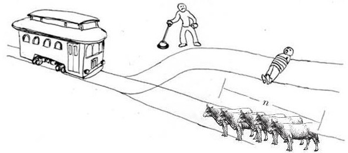
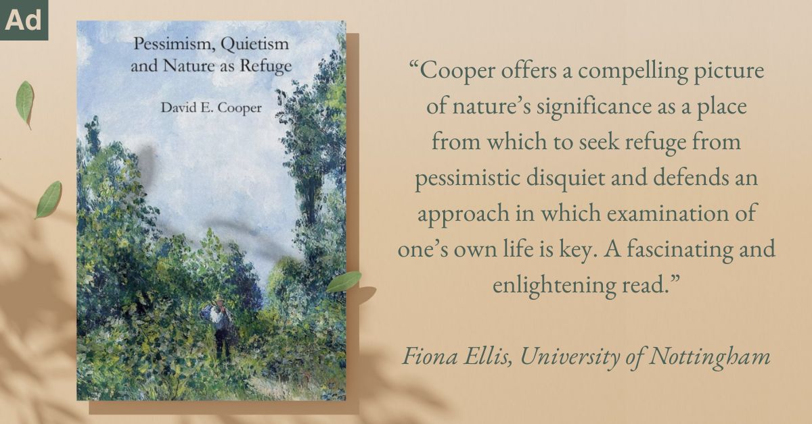

How Many Cows Does It Take?
Navigating the Trolley Problem's Moral Dilemma
The Cow Trolley Problem
You are probably familiar with the Trolley Problem, one of the most famous ethical dilemmas still being debated today. It presents a moral dilemma where a person must choose between two outcomes: diverting a runaway trolley to a track where it will kill one person or doing nothing, allowing it to kill five people. The scenario explores utilitarianism (maximizing overall good by saving more lives) versus deontological ethics (upholding moral principles, such as not actively causing harm).

Since this problem was introduced, many other variations have emerged, adding to the dilemma and making the Trolley Problem more thought-provoking in different ways. One dilemma I have found particularly interesting involves swapping the five people on the track for cows.

Here, instead of five people versus one person, the trolley is heading toward n cows and diverting it will kill one person. The value of n represents the number of cows at risk. The question then becomes, Is there a value of n cows for which you would pull the track switch, and if so, what is it?
This dilemma expands the ethical horizon and invites us to consider how we value human and animal lives. Including animals in the equation challenges us to re-examine our beliefs about moral worth, speciesism, and our ethical obligations to non-human creatures.
What is the Ethical Balance Between Animal and Human Lives
One of the core questions posed by this variation of the Trolley Problem is the comparison between human and animal lives. In the traditional scenario, the moral dilemma is framed around humans exclusively, leading many people to automatically assign higher moral worth to a person over several cows. But why should that be the case?
Philosophers like Peter Singer argue from a utilitarian perspective, suggesting that the interests of animals should be given equal consideration to humans. In his book Animal Liberation, Singer criticizes speciesism, the belief that human lives are inherently more valuable than animal lives. When faced with the dilemma of whether to kill one person or save n cows, the ethical framework changes depending on the number of cows and the value one places on sentient life.
For some, killing one person to save a large number of cows might seem acceptable, especially if those cows are seen as sentient beings capable of suffering. For others, the sanctity of human life trumps any number of animals, which brings us into deontological territory—suggesting that killing one person, even to save countless animals, is morally impermissible.
When Personal Relationships or Attributes Matter
An ethical dilemma such as this is rarely solved in black-and-white terms. The Trolley Problem involving cows could shift dramatically based on who that one person on the track is. What if that person is your mother? How does the moral calculation change? Most people are willing to sacrifice unknown individuals for the greater good in a utilitarian framework, but when a loved one is involved, personal relationships often skew the equation toward deontological ethics. Suddenly, it might feel entirely wrong to actively divert the trolley toward someone you know and love, regardless of the number of cows.
On the other hand, what if the person on the track is a criminal or someone who has caused harm to society? Does that change how you weigh the situation? Is this person now worth more or less than the cows on the other track? This raises the question of moral desert – whether someone “deserves” to be sacrificed based on their past behavior.
Although such judgments could be clouded by personal biases, it’s undeniable that who we view as “worthy” of saving changes our ethical approach to the problem.

David E. Cooper: Pessimism, Quietism, and Nature as Refuge (2024). 168 pages, £18.99. Get it here!
The Vegan Perspective
Introducing veganism into the dilemma adds a new dimension to the problem.
For a vegan, who likely subscribes to the idea that animals should not be used or killed for human purposes, the answer could vary significantly from that of a non-vegan. A vegan might argue that animal lives are equally valuable to human lives, and thus, there is a moral imperative to save the cows if the number of cows is two.

Ethical arguments against veganism are examined and refuted.
For instance, if the person pulling the switch is a vegan, they might see the act of saving the cows as part of their moral commitment to reducing animal suffering. However, if the human on the track is also a vegan, should that factor into the decision? Could the death of a person who holds similar ethical beliefs about animal rights weigh more heavily than the death of a person who consumes animal products?
While a vegan might prioritize saving the cows in this hypothetical scenario, others might find this stance extreme or irrational when placed against human life.
Is There a Clear Answer?
The complexity of the Trolley Problem lies in its refusal to provide clear-cut answers. Instead, it challenges us to grapple with our moral intuitions, ethical principles, and societal norms. Is there a value of n cows above which you would pull the switch? What if n equals 8 billion cows (enough for every person on earth to have a cow for themselves)? Would it then be justified to kill one person to save them? Or would any such calculation inherently devalue human life?
Moreover, introducing elements like personal relationships, criminal behavior, and dietary ethics further muddies the waters. Should the moral weight of a decision change based on who the individuals or animals are? And if so, what does that say about our ability to apply consistent ethical principles across different contexts?
The Evolving Trolley Problem
While the original Trolley Problem raised fundamental questions about moral responsibility and ethical decision-making, its many variations, including the cow scenario, highlight the evolving nature of ethical dilemmas. They illuminate the complexities of modern life, where issues like animal rights, personal relationships, and societal norms all influence how we make decisions.

David Charles: The Surprising Ethics of Climate Change
Given that climate change is, quite literally, an existential problem, it’s strange that we’re not all rushing to solve it.
The Trolley Problem involving cows asks us not just about the value of human lives versus animal lives but also about the frameworks we use to assess moral dilemmas. It invites us to question whether utilitarianism or deontology provides a better guide for our actions and how our values and beliefs – shaped by relationships, criminal justice, or veganism – play a role in our ethical decision-making.
In the end, there is no definitive answer. The Trolley Problem, in all its forms, remains a thought experiment designed to probe the depths of our moral intuitions and force us to confront the difficult, often uncomfortable, choices we must make.
How many cows would it take for you to switch the lever?
◊ ◊ ◊

Avery Warfield on Daily Philosophy: